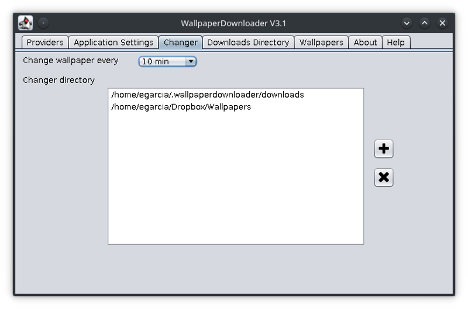

Are you bored with the look of your desktop? Are the wallpapers that come with your distro enough for you? WallpaperDownloader is a graphical application that will help you customize your desktop and find wallpapers automatically.
WallpaperDownloader allows you to download, manage and change your favorite wallpapers from the internet. It is open source (GPL3) and totally free. Simply type in some keywords, enable the providers to include (up to six), select the download policy, and WallpaperDownloader does the rest.
WallpaperDownloader's main features include:
Figure 1. Selecting Providers

Figure 2. WallpaperDownloader's Changer
Figure 3. Wallpaper Manager
Figure 4. WallpaperDownloader Info and Changelog
WallpaperDownloader supports several Desktop Environments: MATE, GNOME Shell, Cinnamon, Budgie, Pantheon, Unity, KDE Plasma 5.8 or greater and XFCE.
You can install WallpaperDownloader using different methods depending on your distribution.
Arch Linux
It is in the AUR repository. Just install it from there:
yaourt -S wallpaperdownloader
Ubuntu, Derivatives and Linux Distros with snapd
WallpaperDownloader is available from the Ubuntu Software Center via snap package (just search for it). If you want to install it via terminal, type:
sudo snap install wallpaperdownloader
Caveats: the snap package fully supports GNOME Shell, Unity, Budgie, Cinnamon, Pantheon and MATE desktop environments. If you are using KDE Plasma 5 (version 5.8 or greater) or XFCE and your distro of choice is Ubuntu, installation via official PPA is recommended.
Ubuntu and Derivatives via PPA
There is an official PPA repository for installing WallpaperDownloader in Ubuntu (16.04 and greater) and derivatives natively. This is the preferred method for enabling all the features of the application, and it's recommended for KDE Plasma 5 and XFCE users. Open a terminal and type:
sudo add-apt-repository ppa:eloy-garcia-pca/wallpaperdownloader
sudo apt update
sudo apt install wallpaperdownloader
I hope you enjoy the application. Feedback, contributions and help with translating the GUI are always welcome!
—Eloy Garcia Almaden